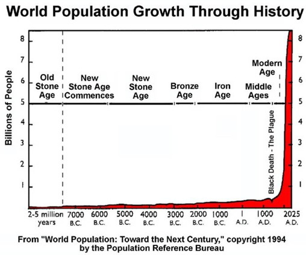

The Society for Practical Utopians
Working together to shape a brighter future for humanity
Human Population Growth
By Herb Bowie
2017 Mar 18
tags: sustainability
If sustainability is the most serious issue of our time, then human population growth is certainly one of the most vital handles we have for making progress in this area.
Let’s look at the topic of human population growth from a number of different perspectives.
The Scope of Growth
The speed and scale of our human population growth constitute an unprecedented global event on our planet.
At the dawn of agriculture, about 8000 B.C., the population of the world was approximately 5 million. Over the 8,000-year period up to 1 A.D. it grew to roughly 300 million, with a growth rate of under 0.05% per year.
During the 20th century alone, the population in the world grew from 1.65 billion to 6 billion.
And our human population has roughly doubled in the last 50 years, since 1970.

Evolutionary Forces
The laws of evolution seem to dictate that all life forms on earth must compete with one another in order to maximize the sizes of their respective populations.
At this point, it is fair to say, the human species, homo sapiens, has become the dominant life form on our planet: the big winner in the evolutionary competition.
As our competitive advantage over other species has increased, human population levels have increased accordingly: 1 billion people in 1800, 3 billion by 1960, 6 billion by 2000, and a projection of 9 billion by the year 2040.
Natural Resources and the Environment
It’s important to realize that population growth is a significant contributor to five separate factors, each of which is having its own negative impact on our earth and its livability.
-
As human population levels continue to grow, it becomes increasingly evident that we can think of the Earth as a collection of valuable resources – usable land, clean air, clean water, stores of energy, and so on – that is decidedly finite. In other words, we can think of the Earth as a pie of fixed size, and our ever increasing human population as a growing group of eager diners. As our numbers grow, each of us, on balance, gets a smaller slice of the pie.
-
As our human population grows and covers the planet, we increasingly crowd out other life forms, causing the extinction of other species at an alarming rate – even species that we know form vital links in our own food chain. These actions have a cumulative effect over the years.
-
Another impact of our population growth is a growing depletion of the Earth’s non-renewable resources, such as subterranean ores and minerals and sources of energy. This action also has a cumulative effect.
-
And yet another impact of the growth of our population is the generation of increasing amounts of pollution, pollution that degrades the quality of human lives, as well as the viability of non-human lives.
-
And one major effect of a certain type of pollution is the global warming of our oceans and atmosphere through the generation of greenhouse gases. And, once again, these activities are having a cumulative effect over the years.
These negative environmental impacts can be seen as the ultimate tragedy of the commons: “a situation within a shared-resource system where individual users acting independently according to their own self-interest behave contrary to the common good of all users by depleting that resource through their collective action.”
How bad is our current environmental situation?
As stated by the Global Footprint Network:
Ecological assets are at the core of every nation’s long-term wealth. Yet today, population growth and consumption patterns are putting more pressure on our planet’s ecosystems, as seen in water shortages, reduced cropland productivity, deforestation, biodiversity loss, fisheries collapse and climate change.
The same source also states that: “…more than 80% of the world’s population lives in countries that are running ecological deficits, using more resources than what their ecosystems can renew.” And it also calculates that we humans, as a whole, are now using “over 50% more than what the planet can regenerate.”
As industrialization and urbanization spread to new corners of the globe, resource demands and environmental impacts tend to grow on a per capita basis. (See a chart of Ecological Footprint vs. GDP to observe the correlation.) So not only are the numbers of people increasing, but the negative effects per person are increasing, acting as a multiplier for all five of the damaging effects listed above.
Cultural Evolution
Humanity’s main competitive advantage in our evolutionary success has been our unique use of culture to augment our physical capabilities, and our switch from biological to cultural evolution as our primary means of rapidly increasing the capabilities of our species.
When using the word “culture,” I mean to include all of the following:
- the development of language, in spoken and written forms;
- the acquisition of scientific knowledge and technology;
- the development of new ways to organize human beings and their activities.
Cultural evolution has permitted us high reproduction rates and high child survival rates, thus allowing more and more people to come into existence. But we have also employed cultural evolution to help us feed and clothe and house more and more people, through developments such as farming, industrialization and urbanization.
Culture, including the application of science and technology, can be thought of as an amplifier for human productivity. Through the use of culture, the typical human can produce greater amounts of goods and services of use to other humans.
Although advances in technology and trade increase human productivity, they also often produce negative side effects. Indeed, as we look around at our modern world, it becomes apparent that these negative impacts are becoming increasingly pervasive and harder to avoid: fracking produces cheaper and more plentiful energy, but pollutes our groundwater and undermines the structural integrity of the very ground we live on; industrial farming creates cheaper and more plentiful food supplies but relies on unhealthy and unsustainable uses of antibiotics, pesticides and fertilizers; factories produce growing quantities of ever more desirable and affordable gadgets, but while throwing off ever higher and increasingly dangerous levels of pollution.
Human culture has evolved, not just through competition with other species, but also through competition between different human populations. Because of this competition, more populous cultures have tended to overrun less populous ones, not simply through their greater numbers, but because their increase in population size and density went hand in hand with advances in technology. So when Europeans began to migrate to North America, the Native American cultures were overtaken by the more technically advanced cultures from Europe, resulting in the gradual but inevitable loss of land once used for hunting and gathering to usage for farming, ranching, and urbanization.
While new options in technology and human organization may allow us to support higher population levels, they don’t in and of themselves force us to increase the size of our population. However, once we do leverage these new options to support higher population levels, we are locked into the use of these new options, because the old technologies and forms of human organization are incapable of supporting the larger population. So it does us no good to cultivate romantic notions of going back to simpler and earlier ways of life, if those ways of life are incapable of sustaining the population levels we have now attained.
We also need to understand that, although increases in productivity may allow us to support higher population levels, there is no guarantee that greater productivity will produce a better quality of life for the majority of its members, and a knowledge of history tells us that many such “advances” have resulted in a worsening quality of life for many members of society. For example, Harari offers this observation:
This discrepancy between evolutionary success and individual suffering is perhaps the most important lesson we can draw from the Agricultural Revolution. When we study the narrative of plants such as wheat and maize, maybe the purely evolutionary perspective makes sense. Yet in the case of animals such as cattle, sheep and Sapiens, each with a complex world of sensations and emotions, we have to consider how evolutionary success translates into individual experience. In the following chapters we will see time and again how a dramatic increase in the collective power and ostensible success of our species went hand in hand with much individual suffering.
So what can we expect from cultural evolution going forward?
If we take a very broad and fuzzy view of what’s going on over time, it might seem that advances in science and technology – and the corresponding increases in productivity that they enable – happen more or less continuously, and can be trusted to continue at the same rate on into our future.
If we take a slightly closer look, though, we can see more clearly that each phase of new technology is unique, and not repeatable: the discovery of the wheel, and everything that it enabled; the discovery of iron, and the ways that it can be shaped and used; the discovery of coal, and other subterranean sources of energy; the development of engines that can drive machines to perform useful work; the discovery of electricity, and its ability to power lights and motors; the advances of electronics, enabling easy and rapid communications; advances in transportation that allow goods to be easily and quickly delivered all over the globe; the development of computers, enabling all sorts of calculations and data transformations to happen at dizzying speeds and scales; the development of intelligent robots that can perform complex and intricate and adaptive work.
Taking this closer view of advancing technology, we must ask ourselves, how many more tricks are waiting to be discovered? And how much more can human productivity be increased? And at what costs, in terms of undesirable side effects?
We must confront the very real possibility that the answers to these questions might not continue to support ever-increasing human population levels.
Equality
One of the fundamental pillars of modern society is the notion that each human life has some innate value, and therefore that each human should enjoy some degree of equal rights.
For example, as proclaimed in the US Declaration of Independence in 1776:
We hold these truths to be self-evident, that all men are created equal, that they are endowed by their Creator with certain unalienable Rights, that among these are Life, Liberty and the Pursuit of Happiness.
Unfortunately, when these words were written, women, slaves and Native Americans were all excluded from enjoying these same rights, but subsequent cultural progress has allowed us to widen this circle to include all members of human society.
But can these advances be sustained – can these notions of innate equality be maintained – in the face of increasing population growth and ongoing cultural change?
Consider this observation from Joe Boyd, a rock record producer, comparing the 1960’s to economic conditions today:
The atmosphere in which music flourished then had a lot to do with economics. It was a time of unprecedented prosperity. People are supposedly wealthier now, yet most feel they haven’t enough money and time is at an even greater premium…. In the sixties, we had surpluses of both money and time.
Friends of mine lived comfortably in Greenwich Village, Harvard Square, Bayswater, Santa Monica and on the Left Bank and were, by current standards, broke. Yet they survived easily on occasional coffee-house gigs or part-time work. Today, urbanites must feverishly maximize their economic potential just to maintain a small flat in Hoboken, Somerville, Hackney, Korea Town or Belleville.
Since the era of “unprecedented prosperity” described by Boyd, our world population has doubled, and the population of a developed nation such as the United States has increased by over 50%. And no matter which large, prosperous city we look at, housing prices have skyrocketed, so that only those with the best jobs can afford to live in the city, while those workers with less glamorous economic roles are forced to live farther from their workplaces, with ever-increasing commute times.
Consider also this comment by Andy Warhol, from the same time period:
What’s great about this country is that America started the tradition where the richest consumers buy essentially the same things as the poorest. You can be watching TV and see Coca-Cola, and you know that the President drinks Coke, Liz Taylor drinks Coke, and just think, you can drink Coke, too. A Coke is a Coke and no amount of money can get you a better Coke than the one the bum on the corner is drinking. All the Cokes are the same and all the Cokes are good. Liz Taylor knows it, the President knows it, the bum knows it, and you know it.
This sort of egalitarian approach to our consumer society no longer seems to be holding up. Those who can afford it maintain their health while shopping at upscale groceries such as Whole Foods, buying fresh, organic, whole-grain products, while those on lower rungs of the economic ladder eat mass-produced fast food that leaves them overweight and unhealthy. And, of course, those with more money skip past the commercials on their DVRs, while those who are less well off watch commercials promoting choices likely to make them less healthy and less economically secure.
Our incomes are also becoming increasingly stratified. The size of our middle class is dwindling, as average wages drift lower and lower for all but the newest jobs requiring the best and the brightest and the best educated.
Even worse, we are seeing groups of people around the world who are increasingly viewed as disposable. As globalization induces large companies to move jobs to areas with the lowest wages, and sell to consumers in areas with the fastest growth in disposable incomes, we are seeing populations that fit neither of these criteria being left behind. Those with no jobs, no income, no property, no wealth and no marketable skills are increasingly being viewed – by themselves and by others – as being excess, unneeded either as workers or as consumers. We can see the results in increasing suicide rates, increasing incarceration rates, increasing levels of drug addiction in developed nations, as well as wars and corruption in less-developed nations. Consider, as one example, this horrific reporting of heroin addicts hiding in plain sight in Philadelphia, only four miles away from where our US founding fathers declared their independence from England.
Is population growth the only cause for these growing levels of inequality, for this loss of our sense of innate human worth? Perhaps not, but as we try to accommodate ever growing numbers of people into our economies and geographies, it is hard not to see a connection.
A Reasonable Goal
From a humanistic perspective, my goal is to enable all humans on our planet to enjoy a reasonable quality of life – to give everyone a decent shot at the pursuit of happiness. I see no value in simply continuing to increase the quantity of human life, especially as increasing numbers of humans threaten our ability to offer all humans a reasonable quality of life.
What do I mean by quality of life? Without attempting to offer a comprehensive definition, let me say that it includes:
- access to necessities such as food, water and shelter;
- protection from pollution of our food, water and environment;
- protection from harm by others;
- access to enough education to allow meaningful participation in human society;
- ability to perform meaningful work that contributes value to society;
- a reasonable degree of liberty;
- an ability to connect with others;
- an ability to create and access beauty, including the beauty of the natural (non-human) world.
A Decision Point
Let’s try a thought experiment.
Suppose you find yourself in a room that contains the single dial that controls humanity’s average birth rate. The lever is clearly marked to show the resulting population growth rate. It’s currently set at 1.11% growth per year, which is our actual current growth rate.
Now it’s up to you: you can leave the growth rate at its current setting, or adjust it in any way you like.
What would you do?
Let’s look at your major options.
-
Allow the human population to keep on growing at a significant rate for now and forever.
This option seems irrational, knowing that we are living on a world of finite resources, and are already overextending them.
-
Allow the human population to keep on growing for now, with the intent to slow and stop its growth at some date in the future.
This option just seems to postpone the inevitable, and imposes a significant additional burden on our global ecosystem, as well as our social and economic systems that will have to somehow accommodate an even larger population than we have today.
-
Adjust the growth rate to zero.
This is certainly better than the first two options, but still leaves us with the problem of how to create a sustainable future for our planet with 7.5 billion people living on it.
-
Adjust the growth rate to something slightly less than zero.
This would not only stop adding to our numbers, but would over time gradually decrease them to a more sustainable level.
-
Adjust the growth rate to something much less than zero.
The social and economic impacts of a rapid decline in population levels would probably be very difficult to absorb.
So when considering the different options, the choice of a slightly negative population growth rate might be the best answer.
But, of course, none of us has such a dial. So, even if we agree on what we’d like to do, how would we go about doing it?
Intentions
I want to be very transparent about my intentions surrounding the topic of human population growth. As I clarify these, I’ll be careful to remain consistent with the Practopian Principles and Values.
Human societies seem to have a number of taboos around the topic of population growth, and I’d like to help us get past these so we can have open and meaningful discussions on this topic. More specifically, I’d like to encourage discussions that integrate elements of science, critical thinking, cultural evolution and a systemic approach.
In particular, I’d like to help displace fundamentalist religious beliefs stating some sort of injunction to “go forth and multiply” or “be fruitful and increase in number.” Most of our major religious texts were written long ago, when human population levels were a tiny fraction of what they are today. As a result, these texts tend to extoll the virtues of large families. Rather than viewing these statements as eternal verities, I’d like to have these writings viewed in context: appropriate for earlier phases of our cultural evolution, but not terribly meaningful today.
All societies obviously need some level of population replenishment in order to remain healthy, and so parenthood is still a role to be encouraged, rewarded and revered.
I believe strongly in the power of ordinary individuals to influence our human condition, and trust that open and meaningful discussions of this topic can help individuals become more conscious of the consequences of their personal choices.
I also favor steps to improve and broaden human access to education and birth control, to allow all humans to make informed and conscious choices about bringing new children into the world.
I think it’s important that our societies become fully aware of both the burdens and benefits of supporting their populations.
I believe strongly in human liberty, equality and democracy, so it is no part of my purpose to encourage or condone any sort of controls that would impose restrictions or sanctions on human reproduction. And neither is it any part of my intent to advocate for policies that would favor or discourage reproduction by any particular group of humans.
Summary
We humans seem to be at a unique point in our evolution. Although our knowledge and beliefs and reasoning powers have advanced in many ways, we still seem to be obeying an evolutionary imperative to continually maximize the population of our species, even though, from a rational perspective, it is becoming increasingly clear that further increases in our population levels – and even continued sustainment of current levels – can be achieved only through a trade-off resulting in a diminished quality of life for the majority of humans on our planet.
For those with a full appreciation of our current situation, and who care for our fellow humans on this planet – those we might call the Practical Utopians – there seems to be only one available lever for us to use, only one reasonable point of emphasis for our efforts: help to reduce human reproduction rates so that the total size of our human population decreases gradually over time.
Tags
 Content at Practopians.org is Copyright © 2009 - 2018 by Herb Bowie except where otherwise noted
Content at Practopians.org is Copyright © 2009 - 2018 by Herb Bowie except where otherwise noted